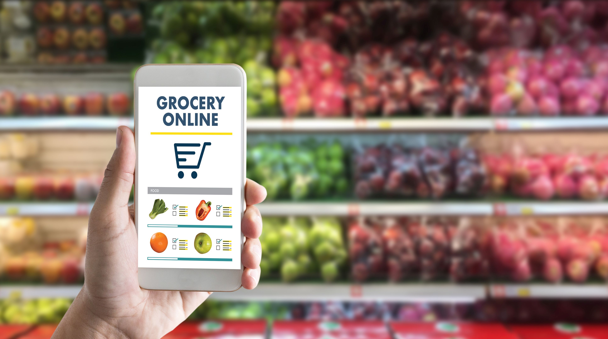

Save Time & Money with the Advantages of Online Grocery Shopping

Experience the Benefits of Home Grocery Delivery
Though many Foodtown locations offer home delivery, many customers forgo the extra few hours of
leisure time that it provides simply because they’re unfamiliar with the advantages of online grocery
shopping. Here’s a closer look at the benefits you can experience.
Experience In-Store Prices and Sales and Then Some
Online shoppers will experience the same great prices and sales as our in-store shoppers, making for
an affordable experience that anybody will enjoy. Plus, shoppers can take advantage of our online-only
discounts when shopping at Yourcart
Buy in Bulk with Ease
As you may already know, buying in bulk is a great way to cut your grocery costs. However, many shoppers avoid buying in bulk because it means taking up extra cart space and navigating the weight of bulky packages. Online shopping for home delivery makes buying in bulk much easier—simply add bulk products to your virtual shopping cart and they’ll be delivered right to your doorstep.
Cut Gas and Parking Costs
Choosing to shop online for delivery means you can avoid putting extra miles on your car, as well as save on gas and parking charges. While these savings may not seem drastic in the moment, over the course of a year they can certainly add up.
Browse on Your Time
Whether it’s 2 o’clock in the afternoon or 4 o’clock in the morning, online shopping allows you to browse the aisles when it is most convenient for you. Though you will have to be present when the groceries are delivered, you can choose a delivery time frame that is most convenient for you.
Avoid the Line and Shop in the Comfort of your Home
Whether fulfilling your weekly shopping list or preparing for Thanksgiving dinner, you’ll experience the same crowd every time… none! Grocery shopping online for home delivery allows you the pleasure of shopping from your dining room table, your couch, or your office, without navigating crowded aisles and lengthy cashier lines. That means having more time to do the things you love.
Avoid Making Multiple Trips
Forget to add an item to your virtual shopping cart? No big deal. With online shopping, you can add items to your cart, even after having made the purchase, up until the day of delivery to your home. That means no more treks back to the store for that single item you forgot.